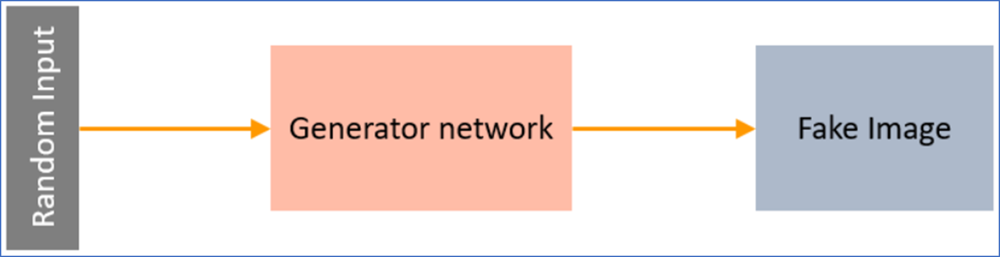

This project features a Generative Adversarial Network (GAN) designed to generate realistic handwritten digits resembling the MNIST dataset. GANs are a cornerstone of generative modeling, pitting two neural networks—a Generator and a Discriminator—against each other in a game-theoretic framework. This implementation highlights my ability to design, train, and evaluate adversarial networks using PyTorch, showcasing their power in creating synthetic data.
The GAN architecture consists of two primary components:
- Generator Network:
- A linear layer mapping the input noise to a 128-dimensional hidden layer.
- A LeakyReLU activation (slope 0.01) to introduce non-linearity.
- A second linear layer projecting the hidden layer to 784 dimensions.
- A Sigmoid activation to normalize outputs between 0 and 1, matching the MNIST image range.
- The output is reshaped into a 1x28x28 tensor to represent a grayscale image.
Figure 1: Architecture of the Generator Network
- Discriminator Network:
- A linear layer reducing the input to a 128-dimensional hidden layer.
- A LeakyReLU activation (slope 0.01) for non-linearity.
- A final linear layer producing a single logit, used with binary cross-entropy loss to classify images as real or fake.
Figure 2: Architecture of the Discriminator Network
What Makes GANs Special:
- Adversarial Training: The Generator and Discriminator are trained simultaneously in a minimax game, where the Generator aims to "fool" the Discriminator, and the Discriminator strives to correctly classify real vs. fake images. This dynamic leads to high-quality image generation.
- Creative Output: GANs can produce entirely new images not present in the training data, making them ideal for creative applications like art generation or data augmentation.
- Challenges and Insights: Training GANs requires careful balancing of the two networks to avoid issues like mode collapse or vanishing gradients. My implementation uses Adam optimizers (learning rates of 1e-4 for both networks) and a batch size of 64 over 100 epochs to ensure stable training.
The model was trained on the MNIST dataset, with real images labeled as 1 and fake images as 0. The training loop alternates between updating the Discriminator (using real and fake image losses) and the Generator (aiming to maximize the Discriminator’s error on fake images). Generated images are saved as 8-column grids for each epoch, visualizing the improvement in image quality over time. This project demonstrates my expertise in adversarial learning, PyTorch implementation, and handling complex training dynamics.
Implementation Notebook
Click below to open the GAN training notebook on Google Colab.
Open GAN NotebookGenerated Images
The following images show the progression of generated handwritten digits at different epochs during training, saved as 8-column grids.
Epoch 0
Epoch 10

Epoch 20
Epoch 30
Epoch 40
Epoch 50
Epoch 60
Epoch 70
Epoch 80
Epoch 90
Epoch 99